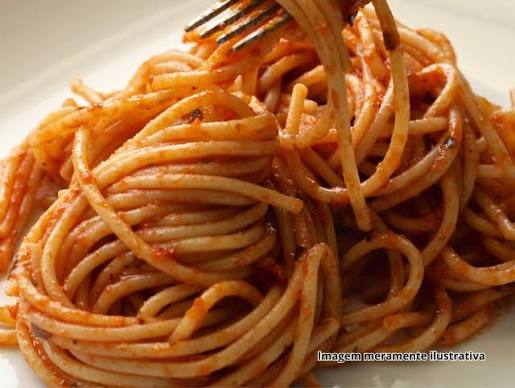
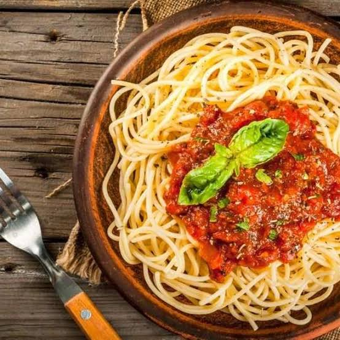

Aprenda a preparar uma deliciosa macarronada caseira com esta receita simples e rápida. Siga os passos abaixo para criar um prato saboroso que vai agradar a todos!
Utilize ingredientes frescos para garantir um sabor ainda melhor. O tomate deve estar bem maduro.
Não deixe o macarrão cozinhar demais! Isso ajuda a manter sua consistência.
A fórmula química da água é H2O.
Esta é a minha 2ª experiência desenvolvendo uma página HTML.

Uma boa receita não precisa ser complicada. O segredo está em preparar cada ingrediente com carinho!
Dica: sirva ainda quente para aproveitar melhor o sabor.
Esta receita é uma sugestão simples para preparar em casa.
O tempo de preparo pode variar de acordo com o tipo de macarrão utilizado.
Este projeto faz parte dos estudos da DIO. Estou aprendendo HTML.
Tempo de preparo:
30 minutos 20 minutos.
Esta frase utiliza a tag font para alterar a cor e o tamanho do texto.
Fim da receita!